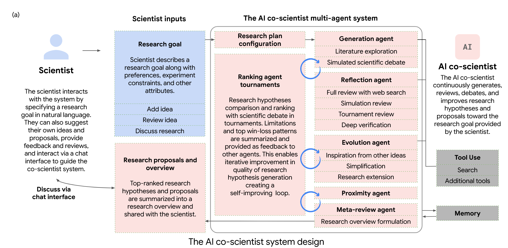

这篇名为 "Towards an AI co-scientist" 的论文，由 Juraj Gottweis, Wei-Hung Weng, Alexander Daryin 等众多研究者共同完成，（根据arXiv的提交日期，我们暂且将其视为一项非常近期的、可能在2025年左右的工作），其核心目标是构建一个能够辅助甚至在一定程度上自主进行科学发现的人工智能系统，即“AI副驾驶科学家 (AI co-scientist)”。
这篇论文的核心贡献和特点可以概括为以下几个方面：
- 多智能体系统架构 (Multi-agent Architecture)：
- 该AI副驾驶科学家并非单一的LLM模型，而是一个基于Gemini 2.0构建的多智能体系统。这意味着系统内部包含多个专门负责不同任务的AI智能体（agent）。
- 论文中明确提到了几个关键智能体，例如：
- Generation agent (生成智能体)：负责初步生成研究假设和方案，进行文献探索和模拟科学辩论。
- Reflection agent (反思智能体)：扮演科学同行评审的角色，批判性地审查假设的正确性、质量和新颖性，并利用网络搜索等工具进行验证。
- Ranking agent (排名智能体)：通过类似Elo评级的锦标赛机制，对不同的研究提案进行评估和排序。
- Evolution agent (进化智能体)：基于锦标赛的结果，持续优化和改进排名靠前的假设。
- Proximity agent (邻近度智能体)：计算假设之间的相似性，帮助组织和探索假设空间。
- Meta-review agent (元评审智能体)：综合所有评审和辩论的见解，形成更高层级的反馈，驱动系统自我改进。
- 这种多智能体架构使得系统能够模拟科学研究中的不同认知功能和协作过程。
- 以科学方法为灵感的迭代改进机制：
- 系统的设计融入了“生成、辩论、进化 (generate, debate, and evolve)”的理念来产生假设，这与科学方法论中提出假说、接受同行评议、不断修正和完善的过程相呼应。
- 通过异步任务执行框架 (asynchronous task execution framework) 实现灵活的计算资源扩展，以支持这种迭代过程。
- 锦标赛进化过程 (tournament evolution process) 是一个关键的自改进机制，通过智能体之间的“竞争”和“辩论”来提升假设的质量。
- 强调新颖知识的发现和可验证的假设：
- AI副驾驶科学家的目标是帮助揭示新的、原创的知识 (uncover new, original knowledge)，并提出可被实验验证的新颖研究假设和提案 (formulate demonstrably novel research hypotheses and proposals)。
- 它不仅仅是总结现有文献，而是要在已有证据的基础上进行构建和创新。
- 人机协作的“科学家在环路 (scientist-in-the-loop)”范式：
- 论文强调，这个系统并非要完全自动化科学过程或取代科学家，而是为领域专家提供帮助，增强其假设生成能力并指导探索方向。
- 科学家可以通过自然语言与系统交互，定义研究目标、偏好、约束，提供反馈，甚至直接贡献自己的想法和假设。
- 在生物医学领域的重点开发与验证：
- 尽管该系统被设计为通用目的，但其开发和验证主要集中在三个生物医学领域：
- 药物重用 (drug repurposing)：例如，为急性髓系白血病 (AML) 提出候选药物，并在体外实验中显示出肿瘤抑制效果。
- 新靶点发现 (novel target discovery)：例如，为肝纤维化提出新的表观遗传靶点，并在人肝类器官中验证了其抗纤维化活性。
- 解释细菌进化和抗微生物药物抵抗机制：例如，通过并行计算机模拟 (in silico) 独立地“重新发现”了一个未发表的关于细菌中新型基因转移机制的实验结果。
- 端到端验证与实际影响：
- 该工作的一大亮点是进行了端到端的验证，包括湿实验室实验 (wet-lab experiments) 来检验AI生成的假设。这超越了许多仅停留在理论或计算模拟层面的AI辅助科研工作。
- 这些在不同复杂度的生物医学问题上取得的积极验证结果，展示了AI副驾驶科学家在增强生物医学和科学发现方面的巨大潜力，有望开启一个“AI赋能科学家”的新时代。
- 利用前沿AI技术：
- 系统构建在Gemini 2.0这一先进的基础模型之上，利用其强大的多模态理解和长上下文处理能力。
- 通过扩展测试时计算 (scaling test-time compute) 的范式来迭代地推理、进化和改进输出，而不是仅仅依赖预训练知识。
总结来说，这篇论文介绍了一个雄心勃勃的AI系统，它不仅仅是一个工具，更像是一个可以与科学家协作的“智能伙伴”。它通过精巧的多智能体设计、模拟科学方法的迭代过程以及与真实实验的紧密结合，旨在从根本上提升科学假设的生成质量和创新性，并加速整个科学发现的进程。其在生物医学领域的成功应用案例，有力地证明了这种“AI副驾驶科学家”模式的巨大潜力和广阔前景。
这篇论文 "Towards an AI co-scientist" 中，AI副驾驶科学家通过一个多层次、多智能体协作的迭代过程来优化假设。这个过程并非单一的优化算法，而是多种机制共同作用的结果，核心思想是模拟科学研究中假设的提出、评审、辩论和改进过程。
以下是具体优化假设的关键机制和步骤：
- 初步生成与文献探索 (Generation Agent)：
- 起点：假设的优化始于
Generation agent。它首先会根据科学家设定的研究目标，通过网络搜索 (web search) 等工具探索相关文献，总结现有知识。 - 构建基础：在理解了背景知识后，它会生成一批初始的假设和研究提案。这些初始假设可能还比较粗糙，但为后续优化提供了起点。
- 批判性反思与审查 (Reflection Agent)：
- 同行评审模拟：
Reflection agent扮演科学同行评审的角色。它会对Generation agent提出的假设进行严格的审查，评估其：
- 正确性 (Correctness)：假设是否与已知科学事实相符。
- 质量 (Quality)：假设的表述是否清晰、逻辑是否严谨。
- 新颖性 (Novelty)：假设是否提出了新的见解，而非简单重复已知。
- 可测试性 (Testability)：假设是否可以通过实验进行验证。
- 安全性/伦理 (Safety/Ethics)：初步评估。
- 过滤不合格假设：通过初步审查，
Reflection agent会快速过滤掉明显有缺陷、不新颖或不合适的假设。 - 深度验证与文献佐证：对于通过初步审查的假设，
Reflection agent会进行更深入的验证，利用外部工具（如网络搜索）查找支持或反对该假设的文献证据，并评估假设是否能解释已有的实验观察结果。
- 锦标赛式排名与辩论 (Ranking Agent)：
- 量化评估：
Ranking agent通过组织一个基于Elo评级系统的锦标赛来对不同的研究提案和假设进行比较和排序。 - 成对比较与科学辩论：在锦标赛中，排名靠前的假设会进行成对比较 (pairwise comparisons)。这通常通过模拟的科学辩论 (simulated scientific debates) 来实现，让不同的“专家视角”（可能由LLM扮演）就两个假设的优劣进行多轮讨论。这有助于更细致地评估每个假设的相对优点和缺点。
- 动态排名：成功的假设（在辩论中胜出或获得更高评价）会获得更高的Elo评分，从而在锦标赛中排名上升。这个排名结果会反馈给其他智能体。
- 进化与改进 (Evolution Agent)：
- 核心优化环节：
Evolution agent是直接负责改进和优化假设的关键智能体。它会关注锦标赛中排名靠前的假设，并采用多种策略进行优化：
- 增强与佐证 (Enhancement through grounding)：识别现有假设的薄弱环节，生成搜索查询，检索相关文献，并利用这些信息来补充细节、填补推理空白，使假设更完善、更有依据。
- 提升连贯性、实用性和可行性 (Coherence, practicality and feasibility improvements)：修正假设中可能存在的逻辑矛盾或不切实际的部分，使其更具操作性。
- 从现有假设中汲取灵感 (Inspiration from existing hypotheses)：基于一个或多个排名靠前的假设，激发产生新的、相关的假设。
- 组合 (Combination)：尝试将多个优秀假设的最佳方面进行组合，形成更强大的新假设。
- 简化 (Simplification)：对复杂的假设进行简化，使其更易于验证和测试。
- 跳出思维定式 (Out-of-box thinking)：探索与当前主流假设不同的、甚至有些“离经叛道”的想法，以期产生突破性创新。
- 生成新假设而非修改旧假设：值得注意的是，
Evolution agent通常是生成新的、改进后的假设，而不是直接修改原有的假设。这样做的好处是保护了高质量假设不被有缺陷的改进所破坏，新的假设也需要重新进入锦标赛进行评估。
- 元评审与反馈循环 (Meta-review Agent)：
- 学习与自我改进：
Meta-review agent在整个优化循环中扮演着“学习者”和“反馈者”的角色。它会分析所有评审意见、锦标赛辩论中的常见模式和问题，并将这些洞见总结成元评审报告 (meta-review critique)。 - 指导未来评审和生成：这个元评审报告会反馈给
Reflection agent，帮助其在未来的评审中更全面、更可靠；也会反馈给Generation agent，帮助其避免重复常见的错误，提高初始假设的质量。 - 持续学习：通过这个反馈循环，整个AI副驾驶科学家系统能够不断学习和改进其假设生成和优化的能力，即使没有进行传统的模型微调或强化学习。
- 科学家在环路 (Expert-in-the-loop)：
- 人类智慧的融入：科学家可以随时介入这个优化过程，提供反馈，修正AI生成的假设，甚至直接贡献自己的新想法。AI会将这些人类输入整合到优化流程中。
总结来说，AI副驾驶科学家优化假设的过程是一个动态的、多方参与的、自我完善的生态系统。它通过模拟科学界的思想碰撞、同行评议和迭代改进，并借助大规模语言模型的推理和生成能力，以及外部工具和数据的支持，不断地对候选假设进行筛选、评估、批判、重组和创新，最终目标是产出高质量、新颖且可验证的科学假设。这个过程的核心在于“迭代”和“反馈”，通过不断的循环，假设的质量得以逐步提升。